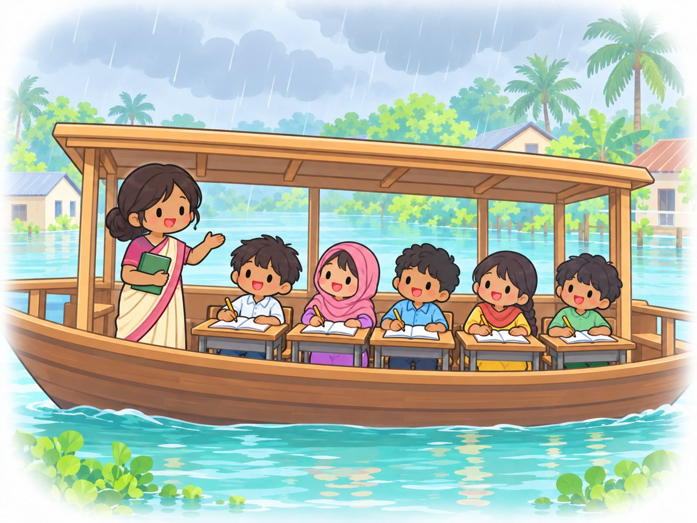

내 짝꿍은 누구일까?
My New Desk Partner
⓪ 단어 먼저 □ 맞은편 Words · 클래스카드
① 처음 읽기 분초
② 음원 따라 읽기 □ □ 0.7~0.8배부터
③ 다시 읽기 분초
해석 TIPso 앞은 까닭, 뒤는 그 결과예요. 앞에서부터 ‘~라서, 그래서 …하다’로 차례로 해석해요. 동사가 2개면 문장 덩어리도 2개!
Words
first day첫날
middle school중학교
nervous긴장한
excited신이 난, 설레는
desk partner짝꿍
ponytail하나로 묶은 머리
shy수줍어하는
answer대답하다
smile미소
pencil case필통
exactly정확히, 꼭
stranger낯선 사람
not ~ anymore더 이상 ~ 아닌
homeroom teacher담임 선생님
beginning시작
쉬운 단어, 이 글에서는
- new 기본 뜻: 전에 없던이 글에서: 처음 온, 낯선new to our town
- first 기본 뜻: 맨 앞이 글에서: at first = 처음에는(뒤에 바뀐다는 신호!)At first, she is very shy.

Check Your Reading
✳내용 확인정답 및 해설 p.2 · 4개 이상 통과제목이 글의 제목으로 가장 알맞은 것은?
내용 불일치글의 내용과 일치하지 않는 것은?
지칭8행의 They가 가리키는 것은?
심경 변화글에 드러난 ‘나’의 심경 변화로 가장 알맞은 것은?
어법(A), (B), (C)의 각 네모 안에서 어법에 맞는 말로 가장 알맞은 것은?
• They (B) [is / are] exactly the same!
• Now we (C) [am not / are not] strangers anymore.
Syntax Training
✳구문 분석 · 앞에서부터 읽기정답 및 해설 p.2A구조 보기 끊은 순서대로 해석 · Hint로 개수 확인 동사 접속사( )형용사구·절< >부사구·절[ ]명사구·절☞ p.6
B앞에서부터 읽기 기호 없이 덩어리마다 바로 뜻 → ‘한마디로’ 고르기 · 되돌아가지 않기!
한마디로□ ⓐ 3반이 됐는데, 다 새롭다.□ ⓑ 3반 친구들이 모두 새로 왔다.
한마디로□ ⓐ 유나가 나에게 긴장되는지 묻는다.□ ⓑ 나도 긴장돼서, 너도 그런지 묻는다.
한마디로□ ⓐ 유나는 긴장하지 않는다며 웃는다.□ ⓑ 유나도 긴장된다고 웃으며 답한다.
한마디로□ ⓐ 이제 우리는 서로 아는 사이다.□ ⓑ 우리는 아직 서로 모르는 사이다.
지문 전체 한마디로□ ⓐ 긴장되던 중학교 첫날, 필통이 똑같은 짝꿍과 친구가 되었다.□ ⓑ 중학교 첫날, 필통을 잃어버린 짝꿍을 도와주었다.
Writing Training
✳배열하고 영작하기지문과 왼쪽 쪽을 가리고 해요지문 속 문법쓰기 전에 확인 · 헷갈리면 Nova Grammar 1권으로!
| 1행 | I am in Class 3. — 주어가 I면 am | ☞ 1권 p.10 POINT 1 |
| 3행 | My desk partner is a tall girl. — 명사 주어 하나면 is | ☞ 1권 p.11 POINT 2 |
| 5~6행 | “Are you nervous, too?” — be동사를 주어 앞으로 | ☞ 1권 p.17 POINT 6 |
| 10행 | we are not strangers — be동사 뒤에 not | ☞ 1권 p.16 POINT 5 |
A우리말에 맞게 덩어리를 바르게 배열하여 문장을 쓰세요. 자신 있으면 C로 바로 가도 돼요
내 짝꿍은 긴 포니테일을 한 키 큰 여자아이다.
with a long ponytailisMy desk partnera tall girl
그녀는 부산 출신이라서 우리 동네가 처음이다.
so she is newShe is from Busan,to our town
우리는 서로를 바라보며 웃는다.
and laughWe lookat each other
B우리말에 맞게 빈칸에 알맞은 말을 쓰세요.
나는 조금 긴장되지만, 설레기도 한다.
I a little nervous, but I excited, too.
그것은 파란색과 노란색이다.
It blue and yellow.
우리 담임 선생님은 한 선생님이다. 그는 재미있고 친절하다.
Our homeroom teacher Mr. Han. He funny and kind.
C우리말을 영어로 쓰세요. ( ) 안의 말을 꼭 쓰세요.
오늘은 중학교의 첫날이다. (the first day)
그것들은 정확히 똑같다! (exactly, the same)
그녀의 이름은 유나이다. (name)
이것은 멋진 시작이다! (great beginning)
배를 타고 학교에 간다고?
Unusual Schools Around the World
⓪ 단어 먼저 □ 맞은편 Words · 클래스카드
① 처음 읽기 분초
② 음원 따라 읽기 □ □ 0.7~0.8배부터
③ 다시 읽기 분초

해석 TIPand로 두 문장을 이었어요. 뒤 문장의 it은 앞의 The boat예요. 가리키는 말은 바로 앞에서 찾아요!
Words
building건물
playground운동장
around the world세계 곳곳의
different다른
boat배, 보트
heavy(비가) 많이 내리는
road길, 도로
under water물에 잠긴
famous유명한
concrete콘크리트
bamboo대나무
a kind of~의 한 종류
wall벽
close to~와 가까운
기본 뜻: 틈 없이 붙다
nature자연
once한때, 예전에
기본 뜻: 한 번
cave동굴
even~도, ~조차
strange이상한

Check Your Reading
✳내용 확인정답 및 해설 p.4 · 4개 이상 통과주제이 글의 주제로 가장 알맞은 것은?
내용 일치글의 내용과 일치하는 것은?
연결어5행 So the school comes to the students!의 원인으로 가장 알맞은 것은?
요약문 완성다음 요약문의 빈칸 (A), (B)에 들어갈 말로 가장 알맞은 것은?
서술형글의 내용에 맞게 표를 완성하세요. (지문 속 영어 단어 하나로)
| Bangladesh | schools on (1) ______ |
|---|---|
| Bali | (2) ______ buildings, no walls |
| China | a school inside a (3) ______ |
Syntax Training
✳구문 분석 · 앞에서부터 읽기정답 및 해설 p.4A구조 보기 끊은 순서대로 해석 · Hint로 개수 확인 동사 접속사( )형용사구·절< >부사구·절[ ]명사구·절☞ p.6
B앞에서부터 읽기 기호 없이 덩어리마다 바로 뜻 → ‘한마디로’ 고르기 · 되돌아가지 않기!
한마디로□ ⓐ 여름엔 비가 와서 학교가 쉰다.□ ⓑ 여름엔 비가 많아 길이 물에 잠긴다.
한마디로□ ⓐ 학생이 못 오니까 학교가 찾아간다.□ ⓑ 학생들이 배를 타고 학교에 간다.
한마디로□ ⓐ 중국엔 예전에 동굴 학교가 있었다.□ ⓑ 중국엔 지금도 동굴 학교가 많다.
한마디로□ ⓐ 그곳 아이들도 자기 학교를 이상하게 여긴다.□ ⓑ 그곳 아이들에겐 그냥 평범한 학교다.
지문 전체 한마디로□ ⓐ 세계 여러 나라 학교는 대부분 교실과 운동장이 있는 큰 건물이다.□ ⓑ 세계에는 우리와 아주 다른 학교(배·대나무·동굴)도 있지만, 그곳 아이들에겐 평범한 학교다.
Writing Training
✳배열하고 영작하기지문과 왼쪽 쪽을 가리고 해요지문 속 문법쓰기 전에 확인 · 헷갈리면 Nova Grammar 1권으로!
| 1행 | Most schools are big buildings — 여럿(복수) 주어면 are | ☞ 1권 p.11 POINT 2 |
| 4행 | the rain is very heavy — 셀 수 없는 것은 하나로 봐서 is | ☞ 1권 p.11 POINT 2 |
| 10~11행 | a school was once inside a big cave — 지난 일은 was / were | ☞ 1권 p.13 POINT 4 |
| 12행 | Are these schools strange to you? — be동사 + 주어 ~? | ☞ 1권 p.17 POINT 6 |
A우리말에 맞게 덩어리를 바르게 배열하여 문장을 쓰세요. 자신 있으면 C로 바로 가도 돼요
대부분의 학교는 교실과 운동장이 있는 큰 건물이다.
with classrooms and a playgroundareMost schoolsbig buildings
그 배는 교실이고, 학교 버스이기도 하다.
is also a school busand itThe boat is a classroom,
중국에서는 예전에 한 학교가 큰 동굴 안에 있었다.
inside a big cavea school was onceIn China,
B우리말에 맞게 빈칸에 알맞은 말을 쓰세요.
방글라데시에서는 어떤 학교들이 배 위에 있다.
In Bangladesh, some schools on boats.
그곳의 건물들은 콘크리트가 아니다.
Its buildings concrete.
그 동굴이 교실이었고, 여름에도 시원했다.
The cave the classroom, and it cool even in summer.
C우리말을 영어로 쓰세요. ( ) 안의 말을 꼭 쓰세요.
인도네시아 발리에서는 그린 스쿨이 유명하다. (famous)
그 교실들에는 벽이 없다. (no walls)
학생들은 늘 자연과 가깝다. (always, close to)
그곳 학생들에게 그것들은 그냥 자신들의 학교이다. (just)
어떤 동아리에 들어갈까?
Join the Green Earth Club!
⓪ 단어 먼저 □ 맞은편 Words · 클래스카드
① 처음 읽기 분초
② 음원 따라 읽기 □ □ 0.7~0.8배부터
③ 다시 읽기 분초
Join the Green Earth Club!
Do you love plants and flowers? Are you interested in nature?
Then this club is for you!
We plant flowers, grow vegetables, and clean the school garden.
| When | Every Wednesday, 3:30–4:30 p.m. |
|---|---|
| Where | Science Room 2 and the school garden |
| Who | All first-year students |
| Fee | It is free! |
Our club leader is Ms. Park. She is a science teacher, and she is very friendly.
Questions? Ask Minho in Class 1-4.
해석 TIP안내문 속 She는 바로 앞의 Ms. Park이에요. and 앞뒤로 박 선생님에 대한 정보가 두 가지!
Words
join가입하다
plant식물; 심다
be interested in~에 관심이 있다
nature자연
grow기르다
vegetable채소
garden정원
first-year student1학년 학생
fee요금, 회비
free무료의
기본 뜻: 묶이지 않은
leader지도자, 담당
science과학
friendly친절한
visit방문하다
by~까지
기본 뜻: 바로 곁
Check Your Reading
✳내용 확인정답 및 해설 p.6 · 4개 이상 통과목적이 글의 목적으로 가장 알맞은 것은?
안내문 불일치Green Earth Club에 관한 내용과 일치하지 않는 것은?
지칭She is a science teacher의 She가 가리키는 것은?
어휘It is free!의 free와 같은 뜻으로 쓰인 것은?
서술형다음 질문에 완전한 영어 문장으로 답하세요.
(1) Who is the club leader?
(2) Is the club free?
조건 · (1)은 be동사 문장으로 · (2)는 Yes/No로 시작하는 짧은 대답 + 한 문장
Syntax Training
✳구문 분석 · 앞에서부터 읽기정답 및 해설 p.6A구조 보기 끊은 순서대로 해석 · Hint로 개수 확인 동사 접속사( )형용사구·절< >부사구·절[ ]명사구·절☞ p.6
B앞에서부터 읽기 기호 없이 덩어리마다 바로 뜻 → ‘한마디로’ 고르기 · 되돌아가지 않기!
한마디로□ ⓐ 자연을 공부해야 하니?□ ⓑ 자연 좋아하니?
한마디로□ ⓐ 그럼 이 동아리가 딱이야!□ ⓑ 그럼 너를 위해 동아리를 만들게!
한마디로□ ⓐ 박 선생님도 동아리 회원이다.□ ⓑ 동아리 담당은 박 선생님이다.
한마디로□ ⓐ 3월 10일까지 과학실 2로 신청하러 와.□ ⓑ 3월 10일에 과학실 2에서 모임이 있다.
지문 전체 한마디로□ ⓐ 자연을 좋아하는 1학년 학생을 그린 어스 동아리 회원으로 모집하는 안내문이다.□ ⓑ 그린 어스 동아리가 학교 정원을 청소할 봉사자를 구한다.
Writing Training
✳배열하고 영작하기지문과 왼쪽 쪽을 가리고 해요지문 속 문법쓰기 전에 확인 · 헷갈리면 Nova Grammar 1권으로!
| Then this club is for you! — 하나(단수) 주어 → is | ☞ 1권 p.11 POINT 2 | |
| Are you interested in nature? — be동사 의문문 | ☞ 1권 p.17 POINT 6 | |
| Our club leader is Ms. Park. — 명사 주어 하나 → is | ☞ 1권 p.11 POINT 2 |
A우리말에 맞게 덩어리를 바르게 배열하여 문장을 쓰세요. 자신 있으면 C로 바로 가도 돼요
그렇다면 이 동아리는 너를 위한 것이다!
for youthis club isThen
너는 자연에 관심이 있니?
in natureinterestedAre you
그녀는 과학 선생님이고, 아주 친절하다.
and she is very friendlyShe is a science teacher,
B우리말에 맞게 빈칸에 알맞은 말을 쓰세요.
그린 어스 동아리에 가입하세요!
the Green Earth !
회비: 그것은 무료이다!
Fee: It free!
우리는 학교 정원을 청소한다.
We the school .
C우리말을 영어로 쓰세요. ( ) 안의 말을 꼭 쓰세요.
너는 식물과 꽃을 좋아하니? (love)
박 선생님은 아주 친절하다. (Ms. Park, friendly)
민호는 1학년 4반이다. (in Class 1-4)
우리는 꽃을 심고 채소를 기른다. (plant, grow)
Word Check
✳Unit 01 단어 확인정답 및 해설 p.8A영어 → 우리말
B문맥 빈칸 지문 속 구절 — 첫 글자 힌트와 (뜻)을 보고, 지문에 나온 모양 그대로 써요
… first day of m s.(중학교)
… but I am e, too.(신이 난, 설레는)
… with a long p.(하나로 묶은 머리)
… I am,” she a with a small …(대답하다)
… I see her p c on the desk.(필통)
… we are not s anymore.(낯선 사람)
Our h t is Mr. Han.(담임 선생님)
… schools are big b with classrooms and …(건물)
But some schools a t w are very different.(세계 곳곳의)
… schools are on b.(배, 보트)
… heavy, and many r are under water.(길, 도로)
… Green School is f.(유명한)
They are b, a kind …(대나무)
… classrooms have no w, so the …(벽)
… you interested in n?(자연)
… inside a big c.(동굴)
Are these schools s to you?(이상한)
Do you love p and flowers?(식물; 심다)
We plant flowers, g vegetables, and clean …(기르다)
… and the school g(정원)
F: It is …(요금, 회비)
Our club l is Ms. Park.(지도자, 담당)
… she is very f.(친절한)
… Science Room 2 b March 10.(~까지)
Unit Review
✳Unit 01 돌아보기점수 → 책 뒤 성장 기록표 p.194논리 연습 · 가리키는 말 찾기 밑줄 친 말이 가리키는 것을 우리말로 써요
Then I see her pencil case on the desk. It is blue and yellow.
→ Reading ① 7~8행
My pencil case is blue and yellow, too! They are exactly the same!
→ Reading ① 8~9행
The boat is a classroom, and it is also a school bus.
→ Reading ② 5~6행
Its buildings are not concrete. They are bamboo.
→ Reading ② 7~8행
But for the students there, they are just their schools.
→ Reading ② 13행
Our club leader is Ms. Park. She is a science teacher.
→ Reading ③
생각하며 읽기 · 보기 없는 빈칸 지문을 가리고 앞뒤 문맥으로 한 단어를 채운 뒤, 그렇게 생각한 근거 단어를 써요
We look at each other and laugh. Now we are not anymore. We are friends.
근거가 된 단어 Reading ①
She is from Busan, so she is to our town.
근거가 된 단어 Reading ①
The cave was the classroom, and it was even in summer.
근거가 된 단어 Reading ②
The classrooms have no walls, so the students are always close to .
근거가 된 단어 Reading ②
Questions? Minho in Class 1-4.
근거가 된 단어 Reading ③
Fee: It is !
근거가 된 단어 Reading ③
be동사 문장 5개 이상 · 60단어 안팎 · 이름, 학년·반, 성격, 좋아하는 것 넣기